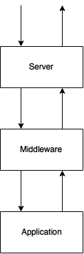

Navigating The Python Web World
a survey of the web through green-tinted glasses
by Matthew Desmarais
matthew.desmarais@gmail.com
2015-07-20
Who am I?
I've been around software since Y2K.
Started testing avionics software (jet engine controls, nav software)
~2003: Wanted to write a coverage tool; Python!
~2006: Came to UConn as a Web Developer w/ Student Affairs
Several trips to CA later I'm at the VoTeR Lab.
Why are we here? 42
- TIOBE index: Python is #5 (behind Java, c, c++, c#)
- Some of this is data science
- A lot of this this the web
-
Topics
- WSGI:
Applications, Servers, and Middleware
- Web frameworks:
DJANGO!, Flask, Pyramid
- Deployment:
mod_wsgi, reverse proxying, Docker
- Networking libraries:
gevent, eventlet, Twisted
WSGI: Web Server Gateway Interface

This is an API and a protocol used to allow interaction between
the different components in a Python web stack. In the beginning,
every web project had to have their own server and application
specification. So Zope had the Zope server that only worked with
Zope and CherryPy had a server that only worked with CherryPy.
Nothing was reusable and everyone had to implement everything
for their own project.
WSGI allows a compliant server to host arbitrary compliant
applications. This is a very powerful idea. And totally copied from
the Java world.
WSGI: The environ - CGI Variables
- REQUEST_METHOD: HTTP verbs
- SCRIPT_NAME: url path to the application
- PATH_INFO: url path withn the application
- QUERY_STRING: ?foo=bar
- HTTP_*: HTTP headers
This is information about the environment in which the request should
be evaluated. There's information about the url, request variables,
and the headers for the request. Everything we know about the request
will be here.
WSGI: The environ - WSGI Variables
- wsgi.multithread: Is multithreading safe?
- wsgi.multiprocess: Is multiprocessing safe?
- wsgi.run_once: Can the application be invoked more than once?
This is lower level information about the request environment and is
often populated by the server or gateway.
WSGI: The start_response callable
def start_response(status, headers, exc_info=None):
...
- status is the numeric status code and the description
- headers is a list of tuples ('header name', 'header value')
-
exc_info is a sys.exc_info() tuple describing the exception that
was raised during the response to the request
WSGI: Application
def application(environ, start_response):
start_response('200 OK', [('Content-type', 'text/plain')])
return ['Hello World!']
This is about the simplest WSGI app possible. It's just a callable
that accepts two arguments: a dictionary and a callable. The
dictionary is called the 'environ' and it is the translation of the
HTTP request into Python objects. The callable is the 'start_response'
function, and this is how you initiate your response.
WSGI: Server (or Gateway)
Interface to the outside world, where the outside world is a network
or a non-python web server, or a unix socket
Servers typically listen to networks and gateways typically interface
with non-Python web components. uWSGI and gunicorn are servers and
mod_wsgi is a gateway. (We'll talk more about these things later)
WSGI: Middleware
Server -> Middleware -> Application
An interesting part of the WSGI spec is that it only specifies how
to pass along a request and how to pass back a response. It doesn't
say that the server is the only one that can pass on a request, and
likewise for applications and responses.
WSGI: Middleware example - Beaker
Session and caching middleware
On ingress, the middleware adds a session to the environ. Also: it can
inspect the request to determine if it has a cached page that
satisfies the request and return the appropriate response.
On egress, the middleware sets whatever cookies are necessary for the
session to work properly.
Web frameworks - Components
Required:
Optional:
- Data layer (ORM or other mapper)
- Templating engine
- Exception handling
- Testing hooks
- Request Dispatch: Which code is called for the request?
-
Data layer: Means for persisting data. RDBMS, Mongo, Cassandra,
etc. Often this includes a tool that maps Python classes or
objects to fields in the database (or other persistence
mechanism).
-
Templating engine: Produces HTML pages. Sometimes with
inheritance, control flow, components.
- Exception handling: In-browser messages and debuggers
*** Library vs. Framework: You call a library, but a framework calls
you!
Web frameworks - Django - Request dispatch
import os
from django.conf.urls.defaults import patterns
from django.http import HttpResponse
filepath, extension = os.path.splitext(__file__)
ROOT_URLCONF = os.path.basename(filepath)
def yoohoo(request):
return HttpResponse('Yoohoo!')
urlpatterns = patterns('', (r'^hello/$', yoohoo))
The thing to notice here is that Django maps urls with regular
expressions.
Web frameworks - Django - Templating
<!DOCTYPE html>
<html>
<head>
<title>
Hi, {{ name }}!
</title>
</head>
<body>
<h1>
Hi, {{ name }}!
My time is <strong>{% now "H:i:s" %}</strong>
</h1>
</body>
</html>
Django's templating limits what you can do to the presentational
and structural. You cannot execute arbitrary code in the template.
Web frameworks - Django - Data models
from django.db import models
class Choice(models.Model):
question = models.ForeignKey(Question)
choice_text = models.CharField(max_length=200)
votes = models.IntegerField(default=0)
Everything inherits from models.Model. No more popos.
Web frameworks - Django - Other nice things
- "MVC"
- The Django admin site
- Huge community
- Decent documentation
- djangopackages.com
It's worth noting that Django was born at the Lawrence Journal-World
newspaper site and so it excels in content management scenarios. That
isn't to say that it can't be used for other things, but the farther
you get from CMS things, the less appropriate you might find it.
Web frameworks - Flask
- Microframework
- Lightweight
- Microservices
Flask started out as an April Fool's Day joke from Armin Ronocher.
Single-file apps were all the rage, and he though they were a bad idea
but realized they were easy to put together. So he made Flask, which
is only a combination of his existing libraries: Werkzeug and Jinja2.
Web frameworks - Flask
from flask import Flask
app = Flask(__name__)
@app.route("/")
def hello():
return "Hello World!"
if __name__ == "__main__":
app.run()
Flask takes the interesting approach that you create a Flask object
and you modify that object to create your app. This works nicely for
composing larger apps from smaller ones, which can help with
testability and maintainability. Flask also makes it easy to create
microservices, which is so hot right now. (And probably also a good
idea)
URLs are mapped to functions through the app.route decorator.
Jinja2 is very similar to the Django templating engine.
Web frameworks - Flask - Extensions
- flask-admin
- flask-celery
- flask-mako
- flask-sqlalchemy
Flask has a healthy extension ecosystem. In fact, extensions are the
intended way to add advanced behaviour to Flask applications.
Web frameworks - Flask - SQLAlchemy
from flask import Flask
from flask.ext.sqlalchemy import SQLAlchemy
app = Flask(__name__)
DBURI = 'sqlite:////tmp/test.db'
app.config['SQLALCHEMY_DATABASE_URI'] = DBURI
db = SQLAlchemy(app)
class User(db.Model):
id = db.Column(db.Integer, primary_key=True)
username = db.Column(db.String(80), unique=True)
email = db.Column(db.String(120), unique=True)
def __init__(self, username, email):
self.username = username
self.email = email
This is the declarative SQLAlchemy style mapping. Everything goes
through the db object.
This is nice enough, but we are still giving up the POPO.
Even this simplified SQLAlchemy interface demonstrates the way that
SQLAlchemy gives you more control over database access.
Web frameworks - Pyramid
- Minimalist, not micro
- Scales up, scales down
- Encourages well-factored code
Pyramid is my favorite. (can you tell?)
It's more like Flask than Django. Designed for people who know what
they are doing (with Python, with the Web). The most DIY of the
frameworks we're looking at.
Web frameworks - Pyramid
from wsgiref.simple_server import make_server
from pyramid.config import Configurator
from pyramid.response import Response
def hello_world(request):
return Response('Hello %(name)s!' % request.matchdict)
if __name__ == '__main__':
config = Configurator()
config.add_route('hello', '/hello/{name}')
config.add_view(hello_world, route_name='hello')
app = config.make_wsgi_app()
server = make_server('0.0.0.0', 8080, app)
server.serve_forever()
This is the simple Pyramid app using URL Dispatch, which is more or
less the same way that Flask works.
Notice how explicit everything is; this is the Pyramid philosophy.
The Pyramid devs are also unafraid to goof around a bit; note the
name Configurator where Config could have done easily.
Pyramid also offers a resource-oriented disptach scheme called
Traversal.
When you use traversal, you provide a resource tree to the
configurator. Pyramid splits the URL on slashes and treats each URL
segment as a step in the path to the resource. When the resource is
found, it is provided to the view function as the context. This
approach lends itself well to generating RESTful interfaces to
resources.
Web frameworks - Deployment - WSGI
- The WSGI application object
-
The one requirement for deploying applications created with these
frameworks is that you get your hands on an application object. This
provides the entry point that a WSGI stack needs. Deployment then
becomes a matter of what you do with that object.
Web frameworks - Deployment - mod_wsgi
- Apache
- CGI? No! (too slow)
- mod_python? No! (too wonky)
- mod_wsgi? Yes! (just right)
Apache, our old friend.
mod_wsgi is an apache module created and maintained by Graham
Dumpleton. It has really shaped up to be _the_ way to deploy WSGI apps
through Apache (or at least it was).
The benefits are that you get a persistent app, which helps with
performance, and your process is managed by Apache (so you don't have
to think about it).
Web frameworks - Deployment - mod_wsgi
import os, sys
sys.path.append('/usr/local/django')
os.environ['DJANGO_SETTINGS_MODULE'] = 'mysite.settings'
import django.core.handlers.wsgi
application = django.core.handlers.wsgi.WSGIHandler()
WSGIScriptAlias / /usr/local/django/mysite/apache/django.wsgi
So all you need is to have a django.wsgi file and point Apache to it.
(The file doesn't have to be named django.wsgi.)
The price is that you have to deal with Apache with all of its mystery
and complexity.
Web frameworks - Deployment - reverse proxy
- Apache
- mod_wsgi? No! (too easy)
- reverse proxy? Yes! (for encapsulation and separation)
ProxyPassReverse /app1/ http://internal1.example.com/
ProxyPassReverse /app2/ http://internal2.example.com/
If you want to run your own server process (this really happens), then
maybe reverse proxying will work for you. You can manage your own
process and Apache will forward requests to some prefix on to your
application.
The downsides: URL rewriting is tricky. Particularly with a path
prefix. (One solution to this is to use subdomains instead of path
prefixes, but that's up to you).
Web frameworks - Deployment - Docker
- Linux container technology
- Isolation from the host
- Portable
- The new hotness
- Reverse Proxy (again)
Docker is a new-ish technology that allows you to run your server
process inside a managed container on a linux host.
Use the same container for development, testing, and deployment!
Docker has some really nice properties and is becoming very well
supported by the hosting ecosystem.
Networking libraries
These are simply my favorite libraries for writing networked servers.
Writing a server involves managing concurrency (if you want to handle
more than one connection at a time). These libraries help you do that.
Networking libraries
-
gevent/eventlet:
see http://eventlet.net/doc/examples.html#echo-server
Eventlet (shown here) is a coroutine framework. Coroutines are like
functions that can survive after you return from them, and retain
state when you visit them later. Eventlet uses coroutines in the
background to let you write blocking asynchronous code. Since the
coroutines are so lightweight, a single process can support
thousands of them, unlike OS threads.
Networking libraries
Twisted lets you write callback-based concurrent networked code that
is performant. Twisted has its own lingo that you have to learn to use
it, but it can be very, very powerful. You just have to be very
careful to use the Twisted-provided libraries for all blocking code.
If you block in Twisted, you're blocking the whole process.
Note: Twisted runs on something called a reactor, and it's basically
a scheduler. So it tells Python what to run when. It's important to
only do short-lived tasks in Twisted so that you don't block the
reactor.
Also note: Twisted is built on Deferreds; these are like promises to do
something in the future. I, personally, might not be smart enough to
use Twisted effectively. YMMV.
Conclusion
- Don't be afraid
- Join the community
- Ask for help & help others
Python has become a goto language for both rapid web development and
also large systems, and the technologies I talked about tonight are
some of the tools people are using to write web code. I only touched
on things tonight; it might be worth having more in-depth sessions
about these topics in the future.
There's a common trait shared by all of the technologies that I've
talked about: they all have great communities. They have mailing lists
and IRC channels and good documentation and people that are there to
help.
Resources
- https://www.python.org/dev/peps/pep-3333/
- https://www.djangoproject.com/
- http://flask.pocoo.org/
- http://www.pylonsproject.org/
- http://eventlet.net/
- https://twistedmatrix.com/trac/
Thanks!